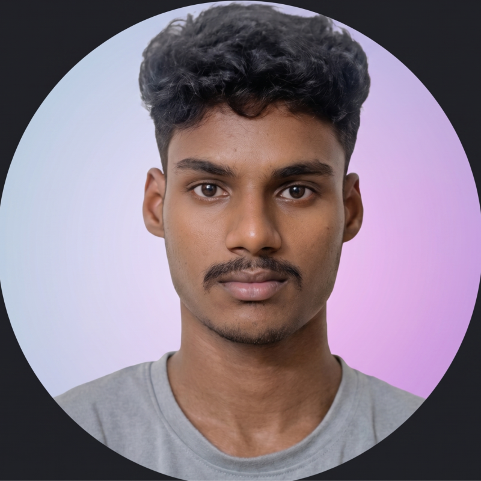

Integrated M.Tech Software Engineering
Vellore Institute of Technology, Vellore
Integrated M.Tech Software Engineering student at VIT University with strong foundations in Data Structures and Algorithms, Object-Oriented Programming, Software Development, and Artificial Intelligence.
Experienced in building AI-powered and full-stack applications using Python, JavaScript, React, Node.js, Express, PostgreSQL, LLMs, RAG, and Generative AI.
Department: Software Engineering
Program: Integrated M.Tech in Software Engineering
University: Vellore Institute of Technology
CGPA: 9.29 / 10.0
Expected Graduation: 2029
Register Number: 24MIS0061
A collaborative mock interview platform where students rotate between candidate and interviewer roles to simulate multi-interviewer technical panels.
Technologies: React, Node.js, Python, AI/ML, PostgreSQL
An AI-assisted career guidance platform providing career roadmaps, resume optimization, interview preparation, and industry-oriented learning support.
Technologies: Python, HTML, CSS, Gemini API, Generative AI
An AI-assisted pipeline for correcting distorted MRI scans using structured preprocessing and enhancement stages.
Technologies: Python, AI Models, Image Processing
To build a successful career in software engineering by developing practical AI solutions, intelligent automation systems, and scalable software applications while continuously improving my technical skills.